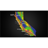

<!DOCTYPE html>
<html lang="en">
 <head>
<!-- Favicon -->
<link rel="shortcut icon" href="../../favicon.ico">
  <meta charset="utf-8"/>
  <title>
   EXCLUSIVE: California's nuclear power plants built in close proximity to the San Andreas fault, setting up catastrophic "Fukushima" event for the West Coast
  </title>
  <meta content="Post on /v/Conspiracy from 2019-07-10 by madmalloy." name="description"/>
  <meta content="EXCLUSIVE: California's nuclear power plants built in close proximity to the San Andreas fault, setting up catastrophic &quot;Fukushima&quot; event for the West Coast" property="og:title"/>
  <meta content="Post on /v/Conspiracy from 2019-07-10 by madmalloy." property="og:description"/>
  <link href="../../static/css/page.css" rel="stylesheet"/>
  <meta content="https://voat.conspiracy.hackliberty.org/thumbnails/29/97/2997dcf9-f2a8-4aea-9320-836011e3349b.png" property="og:image"/>
  <meta content="https://voat.conspiracy.hackliberty.org/v/conspiracy/3326862.html" property="og:url"/>
  <meta content="width=device-width, initial-scale=1" name="viewport"/>
  <link href="https://voat.conspiracy.hackliberty.org/v/conspiracy/3326862.html" rel="canonical"/>
  <meta content="article" property="og:type"/>
  <meta content="Voat /v/Conspiracy Archive" property="og:site_name"/>
  <meta content="en_US" property="og:locale"/>
  <meta content="summary_large_image" name="twitter:card"/>
  <meta content="EXCLUSIVE: California's nuclear power plants built in close proximity to the San Andreas fault, setting up catastrophic &quot;Fukushima&quot; event for the West Coast" name="twitter:title"/>
  <meta content="Post on /v/Conspiracy from 2019-07-10 by madmalloy." name="twitter:description"/>
  <meta content="https://voat.conspiracy.hackliberty.org/thumbnails/29/97/2997dcf9-f2a8-4aea-9320-836011e3349b.png" name="twitter:image"/>
 </head>
</html>
<body class="dark">
 <div id="container">
  <!-- array (
  'submissionid' => 3326862,
  'creationDate' => '2019-07-10 22:06:26',
  'domain' => 'naturalnews.com',
  'formattedContent' => NULL,
  'isAdult' => 0,
  'isAnonymized' => 0,
  'subverse' => 'Conspiracy',
  'thumbnail' => '2997dcf9-f2a8-4aea-9320-836011e3349b.png',
  'title' => 'EXCLUSIVE: California\'s nuclear power plants built in close proximity to the San Andreas fault, setting up catastrophic "Fukushima" event for the West Coast',
  'url' => 'https://www.naturalnews.com/2019-07-10-californias-nuclear-power-plants-built-in-close-proximity-to-the-san-andreas-fault.html',
  'userName' => 'madmalloy',
  'archivedLink' => NULL,
  'archivedDomain' => NULL,
  'isDeleted' => 0,
) -->
  <div style="text-align:center; font-size:24px; font-weight:bold;">
   <a href="../../index.html" style="text-decoration: none; color: inherit;">
    Voat /v/Conspiracy Archive
   </a>
  </div>
  <div class="content" role="main">
   <div class="sitetable linklisting" id="siteTable">
    <div class="submission id-3326862 link type-text" id="submission-3326862">
     <a name="submissionTop">
     </a>
     <p class="parent">
     </p>
     <a class="thumbnail may-blank" href="https://www.naturalnews.com/2019-07-10-californias-nuclear-power-plants-built-in-close-proximity-to-the-san-andreas-fault.html" target="_self">
      
     </a>
     <div class="entry unvoted">
      <p class="title">
       <a class="title may-blank" href="https://www.naturalnews.com/2019-07-10-californias-nuclear-power-plants-built-in-close-proximity-to-the-san-andreas-fault.html" tabindex="1" target="_self" title="EXCLUSIVE: California's nuclear power plants built in close proximity to the San Andreas fault, setting up catastrophic &quot;Fukushima&quot; event for the West Coast">
        EXCLUSIVE: California's nuclear power plants built in close proximity to the San Andreas fault, setting up catastrophic "Fukushima" event for the West Coast
       </a>
       <span class="domain">
        (
        <a href="https://archive.searchvoat.co/search.php?d=naturalnews.com">
         naturalnews.com
        </a>
        )
       </span>
      </p>
      <p class="tagline">
       submitted
       <time datetime="2019-07-10T22:06:26+00:00" title="07/10/2019 10:06:26 PM">
        2019-07-10T22:06
       </time>
       by
       <span class="userattrs">
        <a class="author may-blank" href="https://archive.searchvoat.co/search.php?u=madmalloy">
         madmalloy
        </a>
       </span>
      </p>
      <ul class="flat-list buttons">
       <li class="first">
        <a class="comments may-blank" href="https://archive.searchvoat.co/v/Conspiracy/3326862" rel="nofollow">
         3 comments
        </a>
       </li>
      </ul>
     </div>
     <div class="child">
     </div>
     <div class="clearleft">
     </div>
    </div>
    <div class="clearleft">
    </div>
   </div>
   <div class="horizontal-line">
   </div>
   <div class="commentarea">
    <div class="sitetable nestedlisting" id="siteTable">
     <div class="child id-19668231 comment even" style="">
      <div class="entry unvoted">
       <div class="noncollapsed" id="19668231" style=";">
        <p class="tagline">
         <a class="author may-blank" href="https://archive.searchvoat.co/search.php?u=ShadowWatcher">
          ShadowWatcher
         </a>
         <span class="userattrs">
         </span>
         <time datetime="2019-07-10T23:31:44+00:00" title="7/10/2019 11:31:44 PM">
          2019-07-10T23:31
         </time>
        </p>
        <div class="usertext-body may-blank-within" id="commentContent-19668231">
         <div class="md">
          <p>
           <p>
            Just a question sort of on the topic, how are people living in Hiroshima and Nagasaki when there should be Fallout from the nuclear bombs??? Shouldn't everyone have been evacuated and still be waiting for the safe time to go back if ever???
           </p>
          </p>
         </div>
        </div>
        <ul class="flat-list buttons">
         <li class="first">
          <a class="bylink" href="https://archive.searchvoat.co/v/Conspiracy/3326862/19668231" rel="nofollow">
           link
          </a>
         </li>
        </ul>
       </div>
      </div>
      <div class="child id-19722574 comment odd" style="">
       <div class="entry unvoted">
        <div class="noncollapsed" id="19722574" style=";">
         <p class="tagline">
          <a class="author may-blank" href="https://archive.searchvoat.co/search.php?u=RodnamPosren">
           RodnamPosren
          </a>
          <span class="userattrs">
          </span>
          <time datetime="2019-07-13T20:00:16+00:00" title="7/13/2019 8:00:16 PM">
           2019-07-13T20:00
          </time>
         </p>
         <div class="usertext-body may-blank-within" id="commentContent-19722574">
          <div class="md">
           <p>
            <p>
             The bombs were supposedly detonated in the air to maximize damage from the shockwave, the primary effect of the blast. Immediate radiation exposure is a secondary effect that subsided when the reaction terminates, while fallout is tertiary effect that can be heavily influenced by weather patterns and decontamination efforts after the fact.
            </p>
            <p>
             Both cities have been rebuilt and are doing fairly well, while the corpus of somatic effects of radiation are derived from the study of those populations following the bombings
            </p>
            <p>
             Chernobyl is also an interesting case in that many of the local residents did not leave and many remain to this day. I think thyroid cancers saw a statistical increase in the surrounding area but nothing exceptionally dramatic. It is a tourist attraction for some as the radiation levels are just above background.
            </p>
            <p>
             Joint government studies on Fukushima have revealed that evacuation had a harsher effect on at risk (read:elderly) populations given a higher mortality rate as compared to cohorts to weren’t evacuated. Which is to say nothing of long term effects that will be evaluated as time goes along.
            </p>
            <p>
             $0.02
            </p>
           </p>
          </div>
         </div>
         <ul class="flat-list buttons">
          <li class="first">
           <a class="bylink" href="https://archive.searchvoat.co/v/Conspiracy/3326862/19722574" rel="nofollow">
            link
           </a>
          </li>
         </ul>
        </div>
       </div>
      </div>
      <div class="child id-19669335 comment odd" style="">
       <div class="entry unvoted">
        <div class="noncollapsed" id="19669335" style=";">
         <p class="tagline">
          <a class="author may-blank" href="https://archive.searchvoat.co/search.php?u=madmalloy">
           madmalloy
          </a>
          <span class="userattrs">
          </span>
          <time datetime="2019-07-11T00:30:59+00:00" title="7/11/2019 12:30:59 AM">
           2019-07-11T00:30
          </time>
         </p>
         <div class="usertext-body may-blank-within" id="commentContent-19669335">
          <div class="md">
           <p>
            <p>
             Yep
            </p>
           </p>
          </div>
         </div>
         <ul class="flat-list buttons">
          <li class="first">
           <a class="bylink" href="https://archive.searchvoat.co/v/Conspiracy/3326862/19669335" rel="nofollow">
            link
           </a>
          </li>
         </ul>
        </div>
       </div>
      </div>
     </div>
    </div>
   </div>
  </div>
 </div>
<!-- Footer Section -->
<footer class="container-fluid mt-3">
  <p class="small mb-0">
    /v/conspiracy archive has 42504 posts and 159856 total comments.
    <a href="https://git.hackliberty.org/c0mmando/voat-conspiracy-archive/">source code</a>.
  </p>
</footer>

<script src="../../static/js/jquery-3.7.1.slim.min.js"></script>
<script src="../../static/js/comments-toggle.js"></script>

</body>
